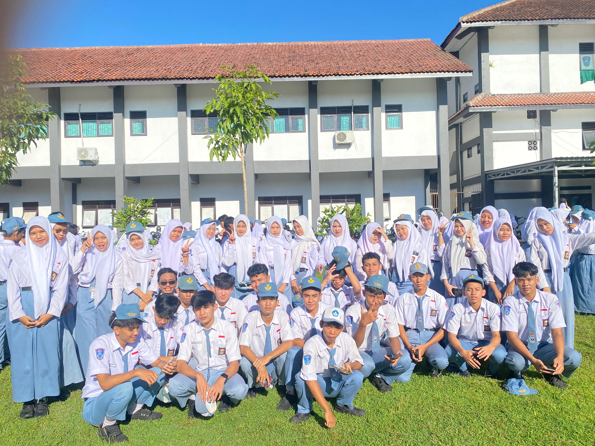

Selamat datang di ruang hangat tempat ingatan dirawat. Di balik setiap baris kode, kabel yang saling bertaut, dan gelak tawa di koridor sekolah, ada kisah manis yang kita ukir bersama di SMK Negeri 1 Klaten.

Setiap detik yang telah kita lewati—dari awal menginjakkan kaki di kelas 10 hingga momen keemasan di kelas 12—tersimpan rapi di sini. Jelajahi dokumentasi perjalanan kita melalui menu di bawah ini.
🎓 Menuju Hari Kelulusan XII TJKT 2